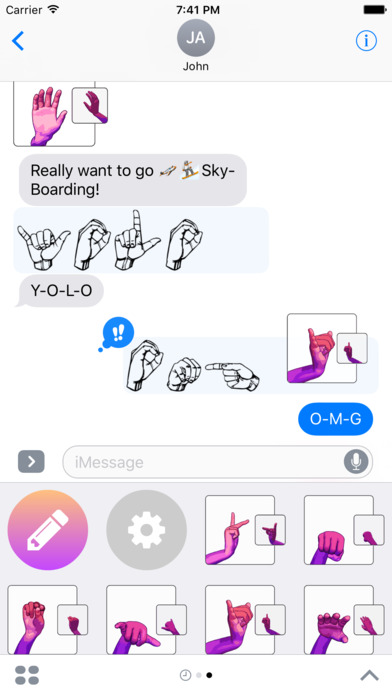

Type in Sign Language
Typing Signs lets you express your messages with hands! From fingerspelling to animated gestures that can be pasted anywhere in your Messages. Try it out!

About
The Goal of Typing Signs is to make ASL and other Sign Languages more accessible and common. Starting by providing a method to type in sign.